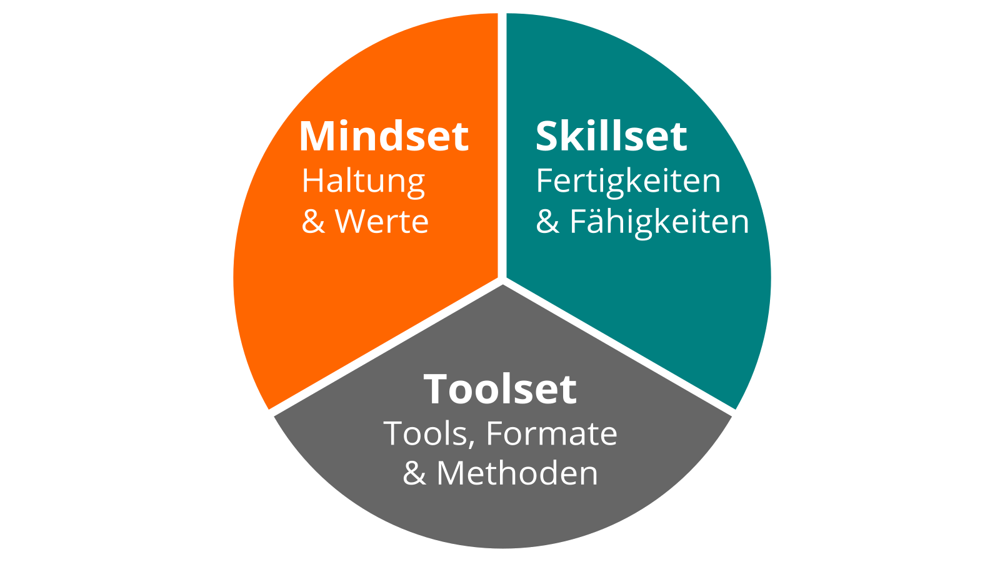

Grundlagen
Wir stehen vor enormen Herausforderungen, die durch Globalisierung, Digitalisierung sowie schnelle technologische und wissenschaftliche Entwicklung angetrieben werden. Gleichzeitig bieten uns diese Veränderungen viele neue Entwicklungsmöglichkeiten. Die Zukunft ist ungewiss und wir können Sie nicht vorhersagen. Wir müssen also offen und bereit dafür sein und sie gemeinsam gestalten (Quelle: Learning Framework 2030). Um durch die sogenannte VUCA-Welt des 21. Jahrhunderts voller Volatilität, Unsicherheit, Komplexität und Mehrdeutigkeit zu navigieren, müssen sich Teenager, Studenten, Fachleute, Manager und Führungskräfte ständig weiterentwickeln. Jeder muss Fähigkeiten wie Kreativität, kritisches Denken, Kommunikation und Kollaboration erlernen. Digital Literacy ist die Kompetenz, mit Hilfe digitaler Tools lesen und schreiben, sowie an gemeinsamen Aktivitäten teilhaben zu können. Sie ist wichtig, um digitale Werkzeuge produktiv einsetzen zu können. Die Motivation für die persönliche Entwicklung sollte dabei mehr sein, als einen gut bezahlten Job zu bekommen oder Profit zu machen. Jeder sollte sich um das eigene Wohlergehen, aber auch das Wohl seiner Freunde und Familie, seiner Communities und der Gesellschaft kümmern. Wir müssen lernen, welches Wissen, Fähigkeiten, Denkweisen, Einstellungen, Werte, Methoden und Werkzeuge wir brauchen, um gemeinsam eine bessere Zukunft zu gestalten.
lernOS kann dir helfen, Dich fit für das 21. Jahrhundert zu machen. lernOS hilft Dir, deine Aktivitäten zu organisieren und bewusst aus jeder Aktion zu lernen. Es fördert außerdem die Vernetzung mit anderen Menschen, damit du nicht jedes Rad neu erfinden und jeden Fehler wiederholen musst.
Und das Beste ist: lernOS ist frei, offen und leicht zu verstehen. Starte heute damit!
lernOS Sprints: Lebenslanges Lernen in 13-wöchigen Timeboxen
lernOS wird in Zeiträumen von 13 Wochen, die wie bei Scrum Learning Sprints genannt werden, praktiziert. Normalerweise laufen die Sprints jeweils in einem Quartal des Jahres. Der Rhythmus kann bei Bedarf angepasst werden. Ein Sprint kann alleine (lernOS Solist), zu zweit (lernOS Tandem) oder in einer Gruppe von 4-5 Personen (lernOS Circle) durchlaufen werden.

So läuft ein lernOS Sprint ab:
- Woche 0: Die Sprint Planung. Versteht jeder die Vorgehensweise? Wann wird der wöchentliche Termin (Weekly) stattfinden? Welcher Lernpfad wird für den Sprint gewählt? Bei lernOS Tandems und Circles: Wird das Weekly als persönliches Treffen oder virtuell stattfinden? Welche Tools werden für die Kommunikation und Dokumentation verwendet? Ist jeder in der Lage, die Tools zu verwenden?
- Wochen 1-11: Es wird an den Zielen und gewünschten Ergebnissen gearbeitet und der Fortschritt im Weekly kritisch reflektiert. Ein Lernpfad schlägt Übungen vor, die wie bei CoderDojos Katas genannt werden. Für Einsteiger*innen (NOOBs) stehen drei Lernpfade zur Verfügung: WOL-Lernpfad (offenes und vernetztes Arbeiten und Lernen), OKR-Lernpfad (zielgerichtetes und fokussiertes Arbeiten und Lernen) und GTD-Lernpfad (stressfreies und produktives Arbeiten und Lernen). Die Empfehlung ist, je Sprint nur ein Lernpfad auszuwählen und in Lerntandems oder Circles die Lernpfade nicht zu mischen. Die beiden Boxenstopps in Woche 4 und Woche 8 helfen zu sehen, ob noch alle auf dem richtigen Weg sind.
- Woche 12 mit der Retrospektive: Review der finalen Ergebnisse des Sprints und Retrospektive des gesamten Prozesses. Bei Lerntandems und Circles: Die Beteiligten entscheiden, ob sie für einen weiteren Sprint zusammen bleiben wollen.
In Schule und Hochschule wird der Takt des Lernens durch Schuljahre und Semester vorgegeben. Um das Lernen danach selbstorganisiert zu stukturieren, werden die lernOS Sprints im Extremfall bis zum eigenen Lebensende eingeplant (von der Wiege bis zur Bahre), so wie das auch schon Peter Drucker praktiziert hat.
lernOS Wheel: Mindset, Skillset und Toolset
Die Beherrschung der VUCA-Welt des 21. Jahrhunderts erfordert Offenheit für Veränderungen und neue Ansätze. Es gibt eine Menge von Werkzeugen und Methoden. Aber wenn du nicht offen bist, sie auszuprobieren, zu experimentieren und zu scheitern, wird der Erfolg ausbleiben. Wie die Leute mit den "quadratischen Rädern" im Bild unten, sind wir oft zu beschäftigt, um die neuen Chancen zu sehen.

Bei der Anwendung neuer Handlungsweisen im Privatleben, in der Schule oder in der Arbeit geht es nicht nur um die Verwendung digitaler Tools. Um von "quadratischen Rädern" auf "runde Räder" umzusteigen, musst Du auch deine Einstellung, deine Werte und deine Fähigkeiten in die Überlegungen einbeziehen. lernOS nennt diese drei Dimensionen Mindset, Skillset und Toolset. Sich nur auf ein oder zwei Dimensionen zu konzentrieren, kann schon helfen. Doch für die besten Ergebnisse sollten alle drei Dimensionen im persönlichen Entwicklungsprozess berücksichtigt werden.

Mindset: Deine Haltung und Werte
Das Mindset kann die Haltung und Werte beschrieben werden, die zu Handlungen und sichtbaren Ergebnissen führen. Diese entwickeln sich im Laufe der Zeit und bilden die Kultur von Organisationen und der Gesellschaft. Wenn wir in der Welt handeln, bekommen wir Feedback und lernen daraus. Im Laufe der Zeit erzeugen wir mentale Modelle der Welt und Werte, die unser zukünftiges Handeln leiten (Boisot, 2004). Für den Erfolg in der VUCA-Welt sind diese fünf Werte besonders wichtig (Buhse 2014 & Petry, 2014):
- Vernetzung vor Isolation
- Vertrauen vor Misstrauen
- Offenheit vor Silos
- Partizipation vor Ausgrenzung
- Agilität vor Stabilität
Es gibt keine Reihenfolge in den oben genannten Werten, aber für mich persönlich ist die Offenheit der zentrale Wert für das Mindset des 21. Jahrhunderts. Damit ist die Offenheit für neue Erfahrungen, Wissen und Ideen, aber auch das offene Teilen von Wissen, Ideen und Inhalten gemeint (s.a. Definition von Offen). Du solltest im Lauf der Zeit ein "Open First Mindset" entwickeln, wie im Open First Manifest beschrieben:

ProTip: Dein Mindset ist nicht in den sprichwörtlichen Stein gemeißelt, es kann sich mit der Zeit verändern. Schaue dir das Video Developing a Growth Mindset von Carol Dweck an, um mehr darüber zu erfahren.
Skillset: Deine Fähigkeiten
Seit den 1980er Jahren sind Fähigkeiten, wie das Lösen von Problemen und der Austausch mit anderen, für den eigenen Erfolg am wichtigsten. Dazu gehören insbesondere Fähigkeiten, die in Zukunft nicht einfach durch Automatisierung und künstliche Intelligenz ersetzt werden können. Um fit für das 21. Jahrhundert zu werden, solltest du folgende fünf Fähigkeitsbereiche trainieren (Framework for 21st Century Learning, DigiComp 2.1 Framework):

Du kannst die folgende Tabelle für eine Selbsteinschätzung am Anfang eines Learning Sprints nutzen. Wir nutzen die Stufen 1-5 aus dem Dreyfus Model of Skill Acquisition (1 = Novize, 2 = Fortgeschrittener Anfänger, 3 = Kompetent, 4 = Profi, 5 = Experte). Trage deine aktuelle Stufe in die Spalte "Ist" und deine angestrebte Stufe in die Spalte "Soll". Auf der Basis kannst du den Fokus für deine Lernaktivitäten bestimmen.
| Fähigkeit | Ist | Soll |
|---|---|---|
| Kreativität & Innovation | ||
| Kreativ denken | ||
| Kreativ mit anderen arbeiten | ||
| Innovationen umsetzen | ||
| Kritisches Denken & Problemlösen | ||
| Ermittlung von Bedürfnissen und technologischen Möglichkeiten | ||
| Dingen effektiv auf den Grund gehen | ||
| Urteile und Entscheidungen treffen | ||
| Technische und nicht-technische Probleme lösen | ||
| Kreativ Technologien zur Lösung von Problemen einsetzen | ||
| Kommunikation | ||
| Gedanken und Ideen klar und effektiv artikulieren | ||
| Effektiv zuhören und Bedeutung erkennen | ||
| Kommunikation nutzen, um zu informieren, zu unterrichten, zu motivieren und zu überzeugen | ||
| Vielfältige Medien und Technologien nutzen | ||
| Effektiv in verschiedenen Umgebungen kommunizieren | ||
| Kollaboration | ||
| Effektiv und respektvoll in gemischten Teams arbeiten | ||
| Flexibilität und Bereitschaft zeigen sowie bei notwendigen Kompromissen unterstützen, um ein gemeinsames Ziel zu erreichen | ||
| Verantwortung für die gemeinsame Arbeit übernehmen und einzelne Beiträge wertschätzen | ||
| Mit digitalen Medien interagieren, sich beteiligen, austauschen und zusammenarbeiten | ||
| Digitale Identität verwalten | ||
| Digital Literacy | ||
| Surfen, suchen, Daten, Informationen und digitale Inhalte filtern | ||
| Auswertung und Verwaltung von Daten, Informationen und digitalen Inhalten | ||
| Schutz digitaler Geräte und personenbezogener Daten | ||
| Entwicklung, Integration und Überarbeitung digitaler Inhalte | ||
| Umgang mit Urheberrechten und Lizenzen | ||
| Programmieren, Scripten und Kodieren |
ProTip: Das Mozilla Web Literacy Framework bietet Übungen zu Digital Literacy und Fähigkeiten des 21. Jahrhunderts.
Toolset: Digitale Tools, die du verwendest
Das Web 2.0 und die sozialen Medien gibt es seit 2005. Nicht jeder muss alle digitalen Tools kennen, aber man sollte einen Überblick haben, die Prinzipien kennen und die richtigen Tools für sich auswählen. Das Conversation Prism gibt einen guten Überblick über heute verfügbare Web 2.0 Plattformen:

Für Einsteiger können 28 Kategorien und Dutzende von Tools überwältigend sein. Die folgende Liste gibt daher einen Überblick über die für lernOS wichtigsten Tools:
- Office- & Produktivität, z.B. Dropbox, Evernote, FreeMind, G Suite, MindManager, Office 365, OneNote, SharePoint, Trello, XMind
- Chat & Messenger, z.B. Google Hangouts Chat, Mattermost, Microsoft Teams, Rocketchat, Slack, Telegram, Threema, WeChat, WhatsApp
- Soziale Netwerke, z.B. IBM Connections, Jive, LinkedIn, Mastodon, Twitter, Workplace by Facebook, Xing, Yammer
- Videokonferenz, z.B. Google Hangouts Meet, GoToMeeting, Microsoft Teams, Skype, Skype for Business, WebEx, Zoom
- Weblogs & Wikis, z.B. Confluence, DokuWiki, LinkedIn (Artikel), MediaWiki, Medium, Tumblr, Wikipedia, WordPress
ProTip: Das lernOS Wiki enthält eine Linkliste zu allen genannten Tools. In Zukunft wird es dort auch Tutorials zur Nutzung der Tools geben.
lernOS Circle: Die Macht von "Peer Support"
Wenn du lernOS nicht alleine praktizieren möchtest, kannst du Dich in einer Gruppe von 4-5 Personen, die Learning Circle genannt wird, zusammenschließen. Ein Circle ist eine Peer Support Gruppe, in der sich die Mitglieder gegenseitig mit Feedback, Erfahrung, Wissen und Reflexion helfen. Der Circle ist ein "Kreis des Vertrauens": was im Circle passiert, bleibt im Circle! Die Circle-Mitglieder treffen sich wöchentlich und folgen dabei einem vorgegebenen Ablauf, der den Lern- und Entwicklungsprozess strukturiert.

Einmal pro Woche trifft sich der Learning Circle. Jedes Treffen folgt einem vorgegebenen Ablauf (siehe Anhang) mit einem Check-in, Übungen (Katas) und einem Check-out. Der Zeitraum für das Weekly kann an die Bedürfnisse der Circle-Mitglieder angepasst werden. Der vorgeschlagene Zeitraum ist Freitag zwischen 11-12 Uhr.
ProTip: Kata ist anderes Wort für Übung. Es kommt aus dem Bereich des Erlernens von Programmier-Fähigkeiten im Peer-Learning-Format. Lies mehr über dieses Format unter codekata.com.
Das Weekly kann als persönliches Treffen (face-2-face) oder virtuell stattfinden. Der Circle muss Tools für die Kommunikation und Dokumentation zwischen den Treffen definieren. Die folgenden Anwendungen haben sich in der Praxis bewährt:
- Microsoft Teams
- OneNote
- SharePoint
- Skype
- Skype for Business
- Slack
- WebEx
- Yammer
- Zoom
Wenn du in deiner Organisation ein Enterprise Social Network (ESN) wie z.B. Jive oder Connections hast, kann das für die Unterstützung von lernOS Circles auch eine gute Option sein.
ProTip: Wählt für möglichst einfache Benutzbarkeit ein Tool, das Kommunikation und Dokumentation gleichzeitig unterstützt, z.B. Microsoft Teams. In Microsoft Teams könnt Ihr den Kanal "Allgemein" für Kommunikation, die Audio-/Video-Konferenz-Funktion für virtuelle Meetings und ein OneNote-Notizbuch zur Dokumentation nutzen.